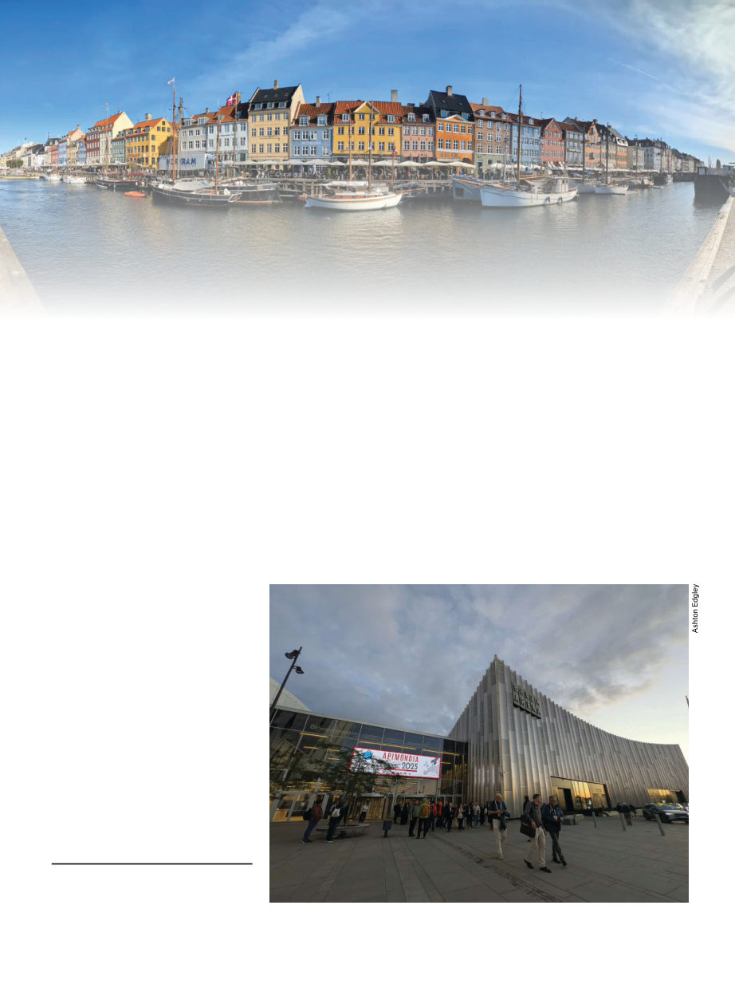

December 2025
1315
O
ver 8,000 beekeepers, from all
over the world (representing
1441 countries), all came to-
gether the last week of September for
the 49th world beekeeping congress,
Apimondia. There we listened to over
300 presentations from leading inter-
national experts, mingled among the
216 booths in the expo exhibiting the
latest products and technology, and
discussed everything on our minds
about beekeeping with old and new
friends from around the world.
For those of us coming from Aus-
tralia it is of course always a difficult
time of the year to get away, occurring
at the height of spring and swarming
season (67 made the trek though!). On
top of that, Copenhagen isn’t close
to Australia! It took me 26 hours, 45
minutes, to fly there with layovers in
Bangkok and Munich (AU$2,289.24
round trip). On arrival I was struck
by how pleasant and mild the weath-
er seems to be anywhere that isn’t
Melbourne. I could go out without a
jacket or multiple layers!
Central Copenhagen consists of
blocks of elegantly aged, picturesque
5-story apartments with shops on the
first floor, connected by roads with
very little traffic because the bike
lanes are used extensively. The side-
walks are smoothly cobblestoned and
you’re always within a block of a bak-
ery selling delicious pastries. If you’re
in the historic area there are frequent
canals, castles, and ancient towers
with tall copper-green spires.
The conference center (Bella Cen-
ter) was just a 15-minute ride on the
clean and easy-to-navigate metro
from the city center. The conference
went from opening ceremonies on
Tuesday evening (September 23)
until the following Saturday, with
usually four or five simultaneous
sessions of presentations going on
at one time. The sessions covered
everything from apitherapy to mar-
keting and economics (and of course
everything in between), with the in-
dividual sessions arranged themati-
cally, which aided one in choosing
whole sessions to sit in on rather
than having to run back and forth
between halls.
Apimondia 2025
by Kris Fricke
The famous Nyhavn ("new harbor") wa-
terfront, one of numerous very beautiful
sights in Copenhagen (Photo by Ashton
Edgley)
Apimondia 49 was held at the Bella Center, the second largest exhibition center in
Scandinavia.